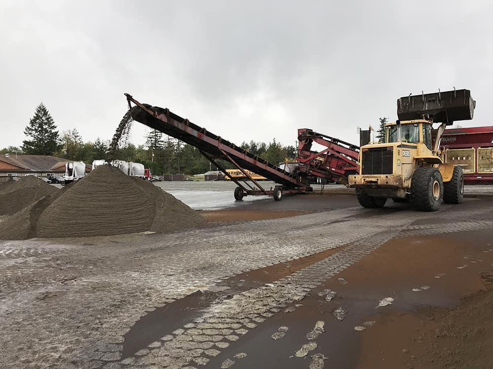

Soil Technologies
Walrath’s unique and innovative digital blender precisely measures the ingredients in soil and sand mixes, gravel for driveways and pathways, ballfield infield mix, topdressing, and sand for golf courses, parks and playfields.
Walrath Soil Products are made with only quality ingredients; compost, clean graded sand or sandy loam, and trusted additional amendments such as high mineral volcanic sand — no subsoil, sawdust or fillers. Walrath is also a rooflite® certified blender for lightweight green roof soils.
Custom soil and sand mix blends
Blends for landscaping, lawn and gardens, lightweight rooftop and potting soils, bioretention medias, and rain garden soils for stormwater filtering. Dozer and loader rental with operator available.
Screening plants
Mobile screeners for screening and sizing material — set up on your work site.
Crushing & grinding
Portable crushing plant for crushed rock, concrete and asphalt, plus a full line of equipment to grind and process wood waste and construction debris.
Rail offload
The Railyard in Tacoma can offload bulk material shipped by rail cars and transport it to any location. Walrath offload equipment can be brought to any rail spur.
Bagging services
If bulk delivery is not an option, products are available in 1-ton “super sacks” — and specialty bagging equipment can be provided on your site with your material.
